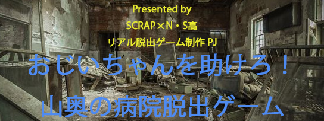

僕は山奥にある中学校に通っている中学生。今日の6限は体育で跳び箱をした。
その時にバランスを崩して手をついてしまった。その瞬間、重い痛みが手に走った。
かなり酷い骨折だ。しかしここは森の中、近くに病院はあるわけない。
そう思った時、先生が2キロ先に古い病院があると、言って連れて行ってくれた。
先生が着いたよーと言って車を出ると、病院とは思えないほどの廃墟だった。先生は忙しいから帰るねと言って戻っていってしまった。
かなりの不安と恐怖で足がすくんだが僕はもう高校生！と思い勇気を出して病院に入った。
病院に入ると80歳くらいのおばあちゃん看護師がいた。
少し心配だったが手の痛みが限界だったので、痛いと伝えるとすぐに手当てしてくれた。
手当が終わるとおばあちゃんがちょっと待ってねというのでしばらくここで待つことにした。
1時間待ってもおばあちゃんは帰って来ず、眠くなって目を瞑ってしまった。そして起きたら9時を過ぎていた。
流石におばあちゃんはもう帰ってきているだろうと病院内を探すもおらず、外を見てみると来たときに止まっていた車が無くなっていた。おそらくおばあちゃんの車だろう
出入り口のドアを開けようとするが鍵がかかっていて開かない。
パニクっている遠くから足音が聞こえてきた。よく見たらおじいちゃんで、彼によるとおばあちゃんの夫らしい。
その後１時間ほど話し、おじいちゃんが「もう寝るよ」と言って席を外した瞬間、彼は倒れてしまった。
今すぐ助けないといけない。おじいちゃんは掠れた声で「ｸｽﾘ。。。」と言った。そして彼の言うことを頼りにして探し、薬と書かれた棚を見つけたはいいものの鍵がかかっていて開かない。そこで鍵を探すのであった。

ストーリー
ゲーム開始前の準備
Are you ready for game?
遊ぶ日時を決めよう！
前後の説明、解説をあわせ、想定所要時間は100分〜120分です。途中で中断することもできますが、お時間に余裕があるときにご参加ください。
紙とペンを用意しよう！
メモをとるための紙と筆記用具をお手元にご準備ください。
ブラウザのCookieとキャッシュを
削除しよう！
エラーが起きる原因となる恐れがありますので、必ずCookieとキャッシュを削除してからプレイを開始するようにしてください。
複数人での遊び方
Playing games with multiple players
コミュニケーションツール
を用意！
例：Zoom、LINE通話など
カメラはオフにしたままでも参加は可能です。
ただ、離れたところにいる仲間と同じ会場で謎解きをしている気持ちになれるので、カメラをオンにしてみんなでわいわいプレイをすることをお勧めします。
イヤホンを使おう！
本ゲームでは、登場人物が会話する動画を見ながら謎解きをします。
動画を見るときにイヤホンを使うと、動画の再生中も仲間と会話をしながらプレイができます。
※イヤホンを使用しない場合は、音声をマイクが拾ってしまわないように、動画の再生中は通話ツールのミュート機能をご利用ください。
情報共有はしっかりと！
遠くにいる仲間と足並みを揃えて遊びましょう。
動画で気になったところ、解けた謎の答えや思いついたことはなんでも共有しましょう！